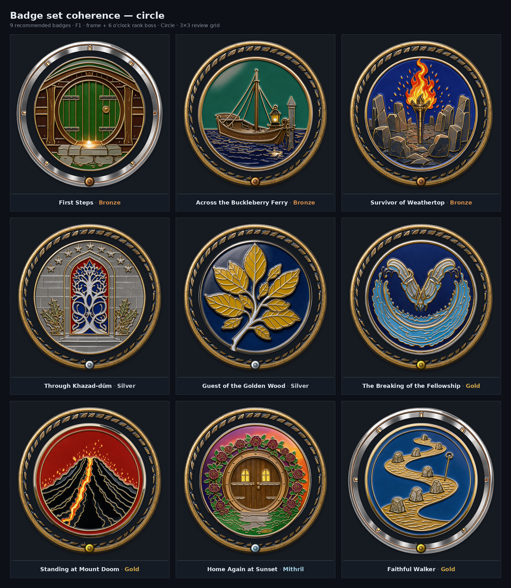
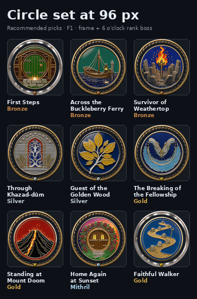
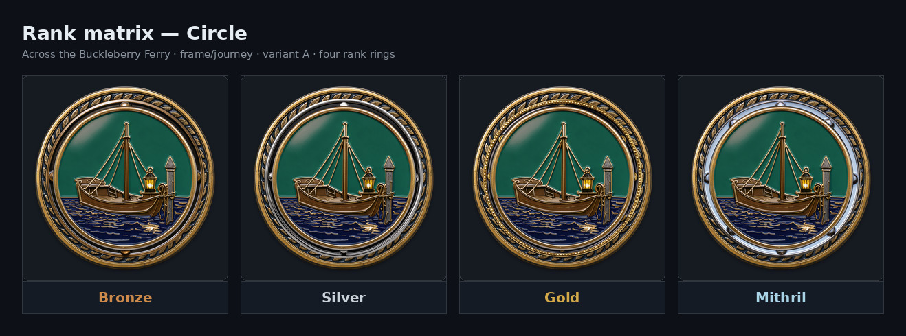
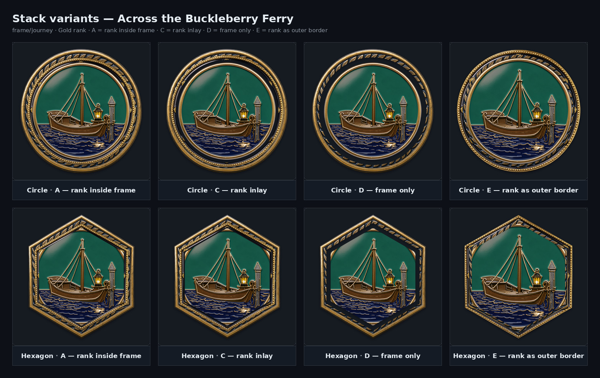
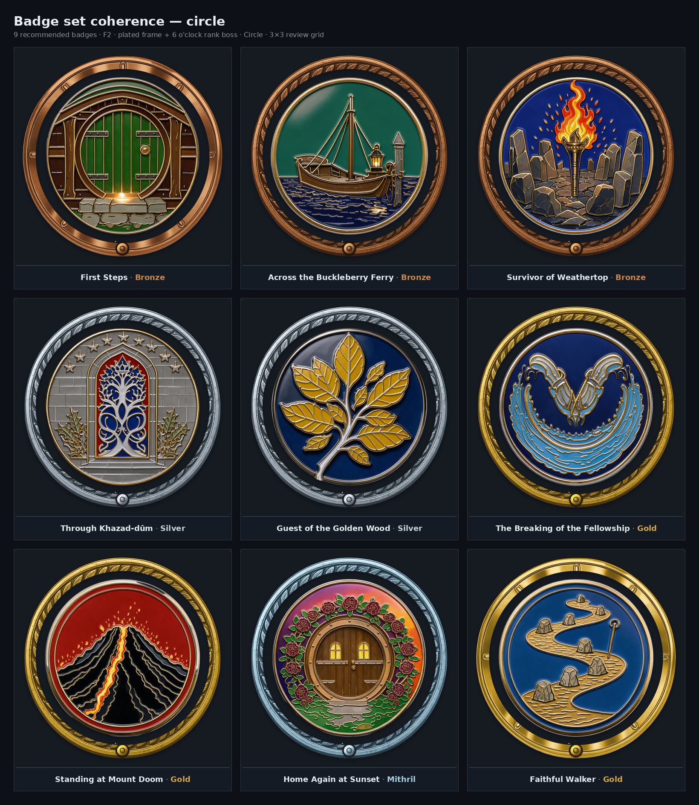
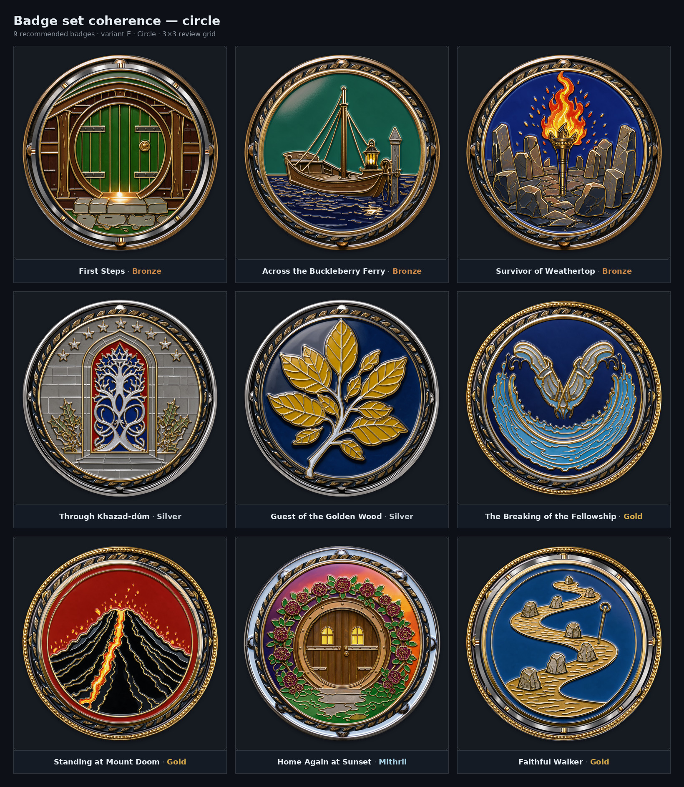
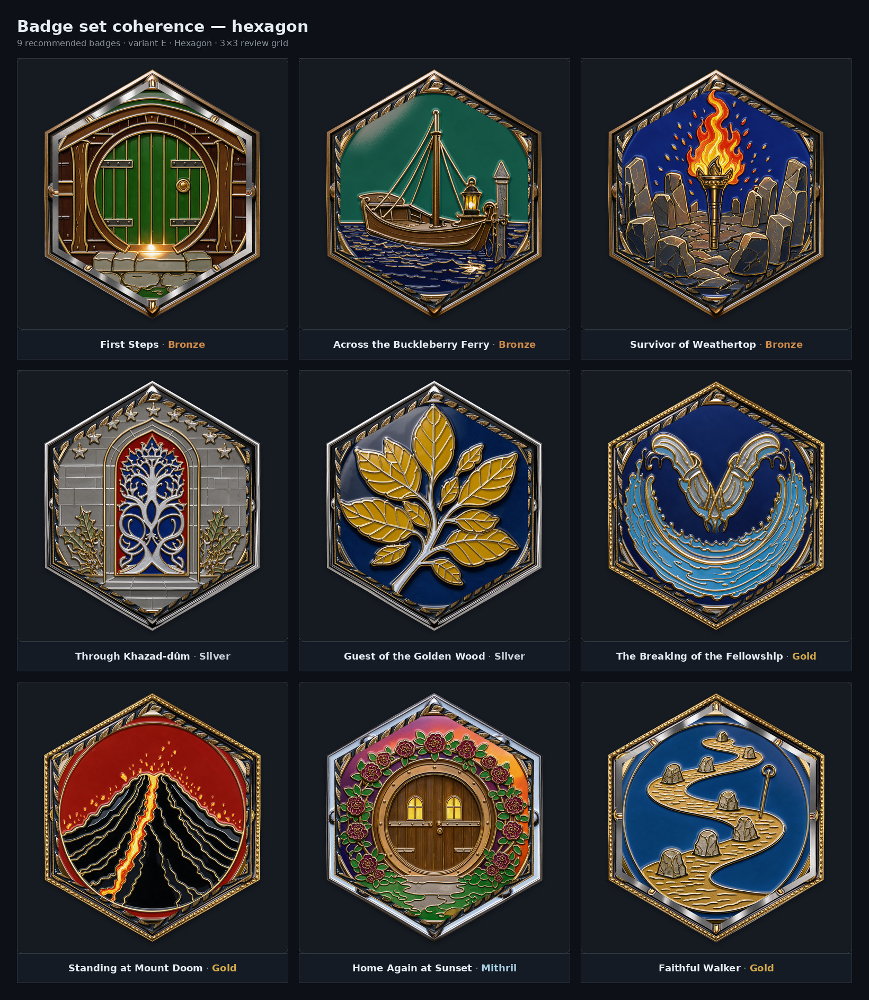
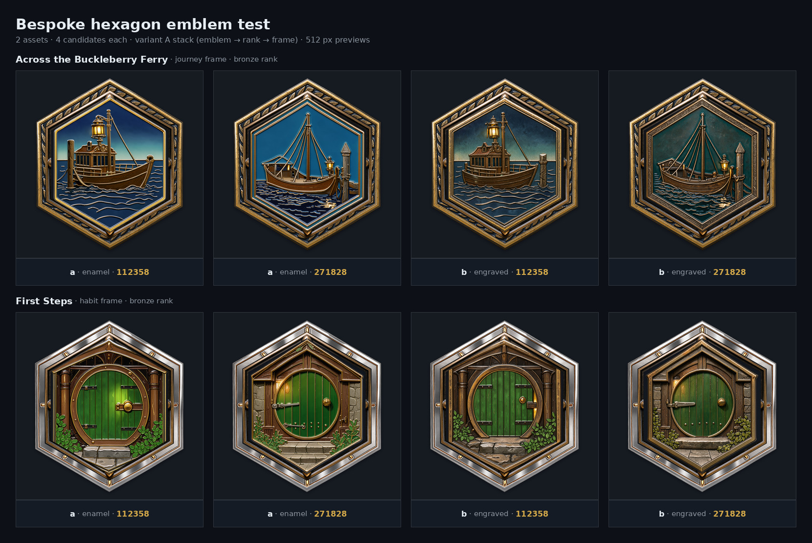
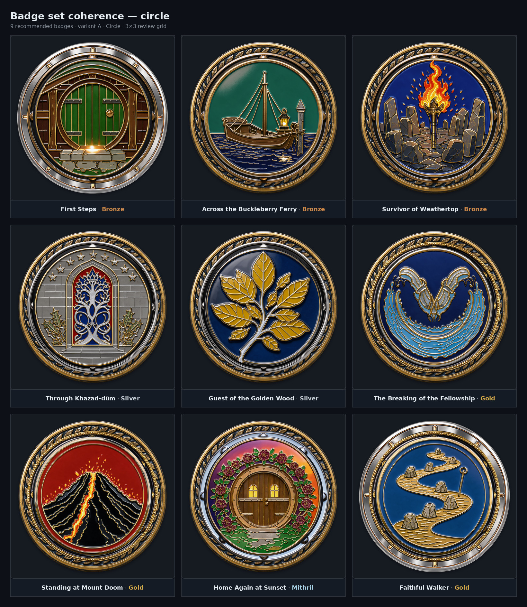
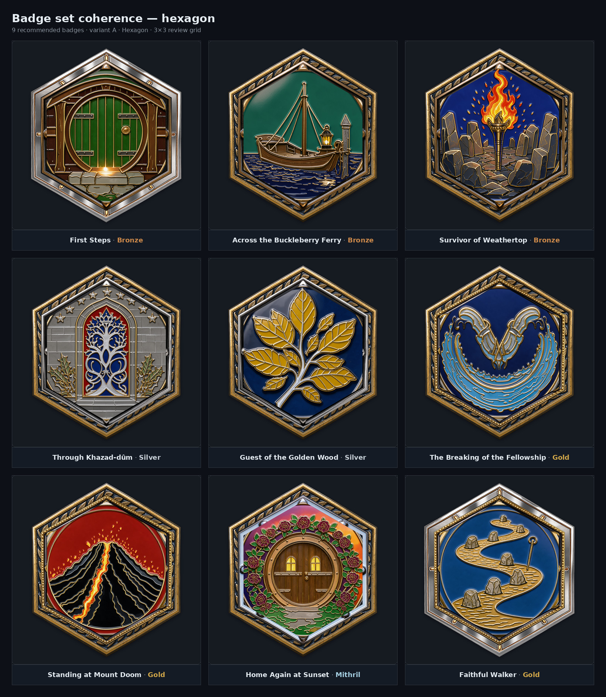

Recommendation
F1 keeps the family frame as the badge's identity — gold laurel for journey, steel/copper notches for habit — and moves rank to a single 6 o'clock cabochon in the rank metal. The boss is a visual cue; the rank label on the card is authoritative. No rank ring, no emblem regeneration, no frame regeneration.
F2 (plated frame + boss) makes rank unmistakable at 96 px, but it retires the family metal: journey-gold and habit-steel both become the rank alloy. It is the rank-forward alternative, not the default.


Why not the current rank ring
The ring is 40 px at the 1016 master — 3.8 px at 96 px. The 3/4/5/6 studs are about 2 px and cannot be counted. Four metals collapse to two visual families (bronze≈gold, silver≈mithril), and gold-on-gold disappears against the journey frame. In the current stack the ring reads as a separate element on only two of nine badges; the other seven merge with the emblem rim or the frame.


F1 vs F2

| F1 — frame + boss | F2 — plated frame + boss | |
|---|---|---|
| Family identity | Preserved: gold laurel vs steel/copper notches | Lost: the whole band becomes the rank alloy |
| Rank at 96 px | Subtle coloured dot; label carries the exact tier | Strong: the whole ring changes colour |
| Regeneration | None | None, but the family metal is retired |
| Set coherence | Stronger | Stronger rank axis, weaker family axis |
Circle vs hexagon
The masked hexagon is not a fair test: circular art cropped into a hexagon reads as a coin in a tray. The bespoke hexagon grid is the fair test and it is promising — but it is a different art style, needs nine new emblems and a re-shortlist, and loses about 17% of the area in the same card box. Both reviewers choose circle for this change and archive the bespoke hex masters as a future optional family.



Set coherence — 3/5
The shared enamel medium and family frames hold the set together. The breaks are field treatment, palette outliers, habit-vs-journey reading as silver-vs-gold, motif density, and the inconsistent rank ring.


Fix list
- Must: adopt F1; group by collection in the UI; swap Home at Sunset to
b-161803and First Steps tob-141421; normalize frame geometry to 1016/880 before 8.6. - Should: strengthen the habit frame's copper line and notches; unify the field treatment (matte flat + soft top-light, no hard dome); desaturate Faithful Walker; test the boss at 200 px.
- Nice: archive the bespoke hexagons; add a second rank axis (boss cut); add a family mark at 12 o'clock; 1 px dark keyline between emblem and frame.
Full reviews
- DeepSeek V4.1 Flash #max — circle, OTHER (D + frame boss), coherence 3/5.
- GLM-5.3-Flash #max — circle, OTHER (frame plating + roundel), coherence 3/5.
The reviews are independent of each other. DeepSeek shares the builder's model family; GLM does not. Their agreement on circle and on removing the rank ring is the strongest signal in this test.
Next step
- Pick F1 (recommended) or F2 (rank-forward).
- Update
design.mdandtasks.md8.6: circle only; no concentric rank ring; 6 o'clock rank boss; rank label authoritative; family frames unchanged. - Re-normalize the frame geometry to 1016/880 and composite the nine final badges in PhotoCraft.
- Export 512 px main and 200 px thumb WebPs; verify at 96 px and 200 px.
- Optional before 8.6: the two finalist swaps and the habit-frame copper edit.